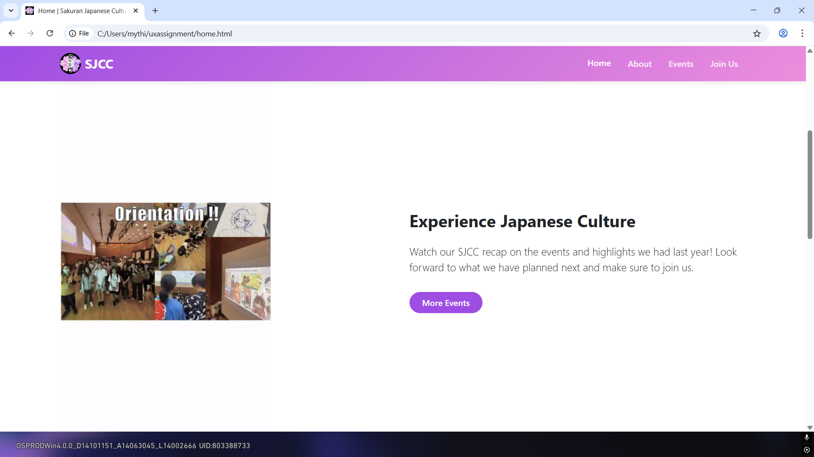
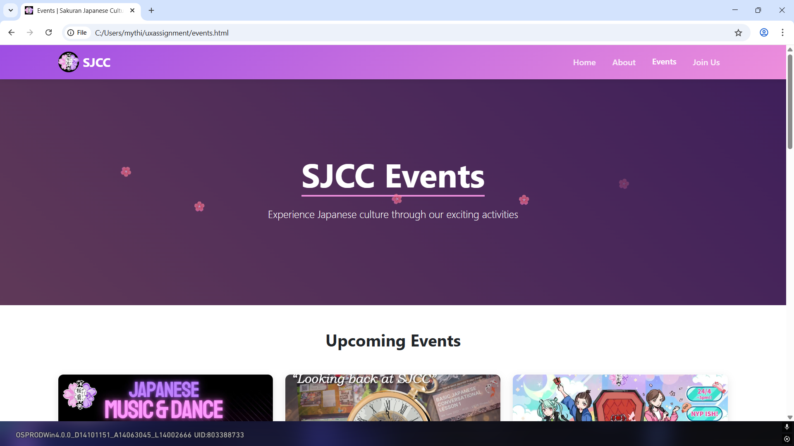
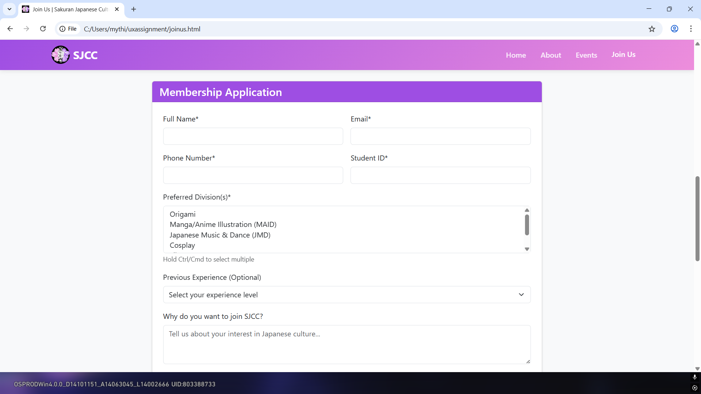

SJCC Digital Experience
This project was a major Duo UX Assignment developed in 2025. We were tasked with building a full-scale recruitment platform for the Sakuran Japanese Cultural Club (SJCC). The goal wasn't just to make a "website," but an experience that felt like stepping into the club itself. We utilized Bootstrap 5 to ensure every pixel was mobile-responsive and professional.
Homepage
The Homepage design theme was intentionally built around the club's purple aesthetic. I integrated the `sjccrecap.gif` to give new members an immediate "Sneak Peek" of the chaotic, fun energy they can look forward to.
I also built Gallery Highlights—previews of club events that are fully hoverable and clickable, leading users to deeper content. At the bottom, the "Explore SJCC" section uses custom Bootstrap Icons to link to other pages, and I even added a script for English-to-Japanese text transitions to add that extra layer of cultural immersion.
I also built Gallery Highlights—previews of club events that are fully hoverable and clickable, leading users to deeper content. At the bottom, the "Explore SJCC" section uses custom Bootstrap Icons to link to other pages, and I even added a script for English-to-Japanese text transitions to add that extra layer of cultural immersion.



About Page
On the About Page, I wanted to make the massive amount of club "yapping" easier to navigate. I built a Member Filter System that allows users to filter the directory by Member Name and Member Role.
This is super useful for a club with 7 divisions—from JMD dance to Origami—because it helps users find the specific leaders they need in seconds without wading through all the descriptions. The layout ensures the technical functionality remains clean while showcasing the diverse talent within the club.
This is super useful for a club with 7 divisions—from JMD dance to Origami—because it helps users find the specific leaders they need in seconds without wading through all the descriptions. The layout ensures the technical functionality remains clean while showcasing the diverse talent within the club.


Event Page
The Event Page features my automated Event Calendar. I programmed it to automatically display every workshop and festival in Strict Date Order, so members always know what's coming up next without having to dig through old posts.
The interface uses chronological sorting to prevent any confusion for busy students, making it a highly functional dashboard for club members to manage their participation in upcoming cultural activities.
The interface uses chronological sorting to prevent any confusion for busy students, making it a highly functional dashboard for club members to manage their participation in upcoming cultural activities.


Join Page
The Join Page features complex JavaScript Validation Logic. The email field rejects entries without an @ symbol, and the phone field is hard-coded for Singaporean numbers—it requires 8 digits and must start with an 8 or 9.
I also added a Terms and Conditions checkbox and used Bootstrap Icons throughout the "Why Join Us" section to ensure a professional recruitment flow. These technical safeguards prevent data entry errors and maintain a high standard for our membership database.
I also added a Terms and Conditions checkbox and used Bootstrap Icons throughout the "Why Join Us" section to ensure a professional recruitment flow. These technical safeguards prevent data entry errors and maintain a high standard for our membership database.


